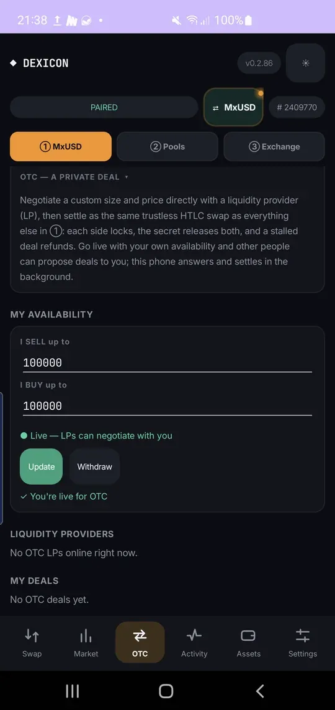
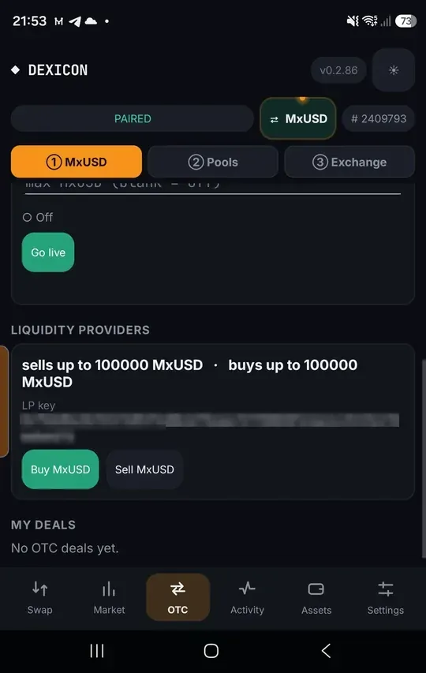
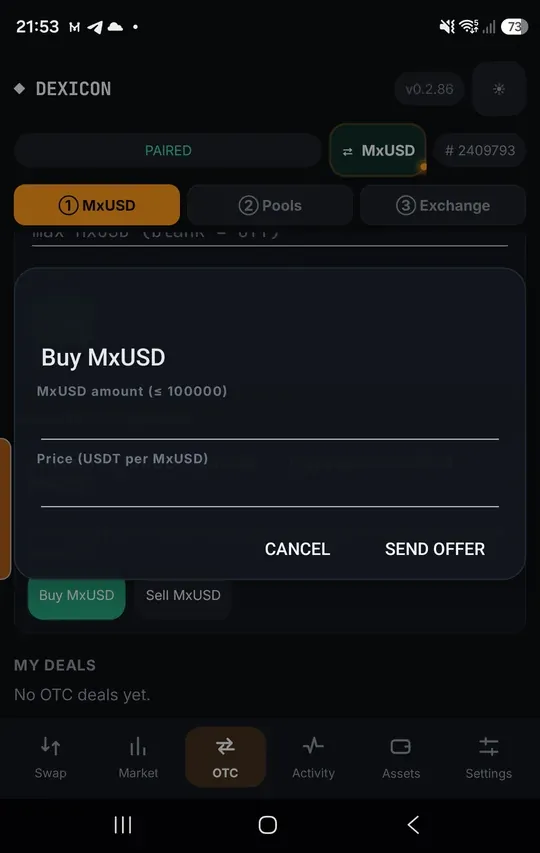

Negotiate a private OTC deal
Agree a custom size and price with one liquidity provider, then settle it as the same trustless swap: each side locks, the secret pays both, and a stalled deal refunds.
Offer your own availability
Anyone can be a liquidity provider. In ① MxUSD › OTC, set how much you sell and buy, then tap Go live. Your offer is posted on chain, so other phones find you; Dexicon answers deals in the background.
Leave a side blank to turn it off. Withdraw takes your offer down.

Find a liquidity provider
Live LPs appear under Liquidity providers with how much they sell and buy, and their LP key. Tap Buy MxUSD or Sell MxUSD on the one you want.

Propose your size and price
Enter the amount and your price in USDT per MxUSD, then Send offer. The LP can accept, reject, or counter with their own price; you can counter back.
Nothing is locked while you negotiate. Offers nobody answers expire on their own.

Settle the agreed deal
Once you both accept, your Dexicon locks your side first. The LP’s Dexicon locks theirs only if your lock matches the agreed terms exactly, and the swap completes like any other. Follow it under My deals and in Activity.